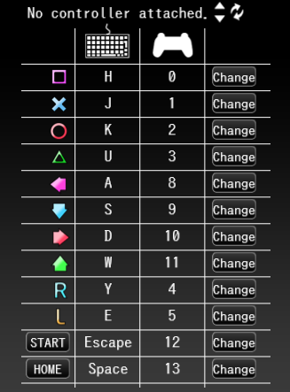

1. Open the official PPD website.
2. Click the "download" tab near the top left.

*You do not need a PPD account to play the game; however, you must have an account to save scores, upload custom charts, and have a profile picture + name during multiplayer.
3. Click the blue "PPD Installer (64bit)" button. This will download the PPDInstaller to your PC.

4. Extract and open the PPDInstaller folder, and start the application.

Select your language and download options.
Upon running the PPDInstaller, PPD will be located in the "KHC" folder.

Circled in red is the game itself. Click this to run the game.

You have now downloaded PPD!
PPD can be played with a keyboard or a variety of controllers (typically a DS4).
Before connecting a controller, be sure to complete the following steps first.
1. Starting the PPD application for the first time will trigger an update. After this update is completed, you'll be met with this box:

If you made an account beforehand, go ahead and enter your account info. If not, hit cancel and the game will start normally.
2. You'll be met with this screen and will need to navigate with the mouse initially:

Click the arrow pointing to the right on the screen to progress. Continue to navigate until you arrive at the in game inputs screen.
Use the "Change" buttons to change the desired key/button bindings to whatever you like. On keyboard, it is recommended to change the Home button to a more uncommon/unused key.
3. Once you are done, you will arrive at this screen. Use your new L and R buttons to navigate the menus.
From here, you can play with a keyboard if you wish.
Just be sure to add some songs to play first!
Press the key your circle button is binded to to confirm and start single-player or multiplayer mode.
To play with a controller, close PPD and continue with this guide.
Making an account is not necessary if you only want to play the game and not use account features (saving scores, uploading custom charts, having a profile picture + name during multiplayer, etc.)
1. Click the "sign up" tab at the top right corner of the official PPD website.
We highly recommend specifically clicking this "sign up" tab in the top right corner. The blue button has been known to not work.

2. Enter a valid e-mail address and click "Register."

Things to be mindful of when making an account:
1. No username that's already be used.
2. No E-Mail address that's already been used/deactivated.
3. No symbols in the password (only alphanumeric + capitalization allowed)
You have now made a PPD account!
This guide was originally written by Marathon (marathonguy). Thank you, Marathon!